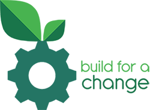

About Us
What BFAC is?
It's part of life to have obstacles. It's about overcoming obstacles. That's the key to happiness.
But what about the disabled, and the helpless. How do they overcome their obstacles. When we guide them in overcoming regular challenges , we make a million people happy along with ourselves.
We at Build for a Change (BFAC) aim at enabling problem solving through cooperative efforts in a conducive environment. We provide a platform for creative minds to combine their technical dexterity on relevant and significant technical challenges that ameliorate the society. Encouraging students to take up socially assistive projects with consistent support from NGOs and technical mentors, and finding feasible solutions, is the exclusive paramount objective of BFAC.
Why BFAC?
We know the hardships that plague millions of people across the world, and specially in our country.
Lack of primary health care, illiteracy, scarce food and water resources are just some of the many problems that need to be addressed. NGOs have taken it up upon themselves to alleviate these issues and harbor benefits to all. We hope to aid them in their efforts and break the shackles of technical barriers that hinder the NGOs progress. And hope that they reap the rewards that they deserve.
How we function?
The problems and challenges that we put up are framed by NGOs and people who have had enormous and extensive experience in associated fields. Students can sign up for problems and work with self-set deadlines and milestones.
For technical assistance, we take aid from professionals and mentors who are heavily inclined to work for a social cause and ameliorate the society.
Finally the projects are reviewed by NGOs and mentors, and are then taken up for further development by incubators who incorporate necessary quality assurance and provide enormous assistance.
The Incubators ensure maintenance of the prototype and provide required testing which then results prototype turning into a product ready to be introduced to the market. The underlying goal for these prototypes is to be cost effective ,easily available and be of assured quality to the NGOs for extensive use.